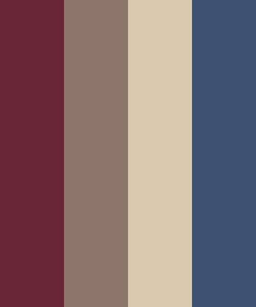
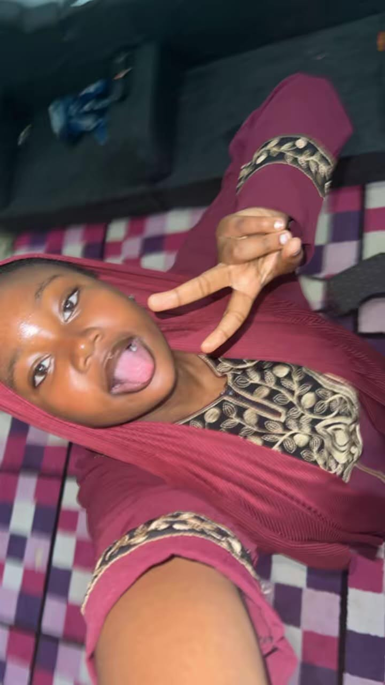
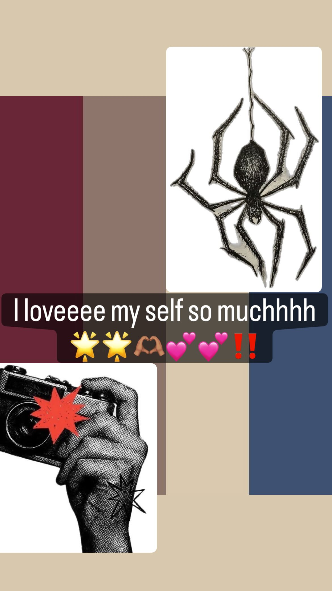
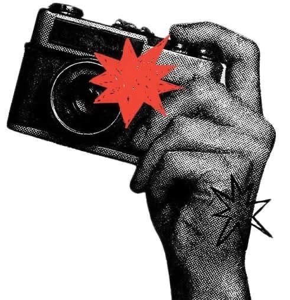

prettyBlueee
Beigeee.
Burgundy!
Built around balanced spacing and clear visual hierarchy.
Creative thinker, builder, and storyteller drawn to calm blues, warm beige tones, and deep burgundy details. Explore my featured cards below or write a fresh entry in my personal journal.

Warm sand and beige keep things grounded, soft slate-blue brings calm clarity, and burgundy adds just enough bold personality without feeling loud.

"Quiet focus and bold details always win."
Tap a mood button to switch My studio note and focus tip:
My dream is to become a successful technology professional, creating innovetive websites that make people's lives easier. I want to improve my coding skills, explore new ideas and use technology to solve real-world problems. My goal is to become a creative and skilled developer who makes a positive impact on the world through technology.
My dream is to become a successful technology professional, creating innovetive websites that make people's lives easier. I want to improve my coding skills, explore new ideas and use technology to solve real-world problems. My goal is to become a creative and skilled developer who makes a positive impact on the world through technology.
Curious & Playful: Vibrant hues and playful elements.I love exploring new ideas, asking questions and discovering creative ways to do things. I enjoy adding curious and playful elements to my work, experimenting with different designs and trying out new ideas. I believe that creativity makes learning more exciting, and i always leave room for a little fun, imagination and suprises in everything I create.!!
Reflective: A quiet moment to notice how far I've come.I like taking time to think about what I have learned, celebrate small steps, and choose what I want to explore next.
I love drawing because it lets me bring ideas to life, skating because it gives me a fun way to move and feel free, and writing because it helps me capture my thoughts and stories.💕 These hobbies keep me inspired and make space for creativity in my everyday life.
I aspire to become a creative technology professional and build things that make people's lives easier. Being Muslim is an important part of who I am, and spending time with my cool friends and feeling good about how I look are things that bring me happiness and confidence.

prettyBuilt around balanced spacing and clear visual hierarchy.
 Ramaa!
Ramaa!
A little bit of humor, a lot of curiosity, and a mind full of dreams. I love reading, good conversations and making memories. Simply me, always growing and staying unique!
I really enjoyed working on this project and i love this project!

I LOVE TAKING PICS!I love capturing little moments through camera. From beautiful views to random memories , I believe every picture has a story worth keeping.
Simple interactions that feel alive right in the browser.
Write your thoughts below and hit save—entries stay stored in your browser.
All saved entries appear here automatically with timestamps.